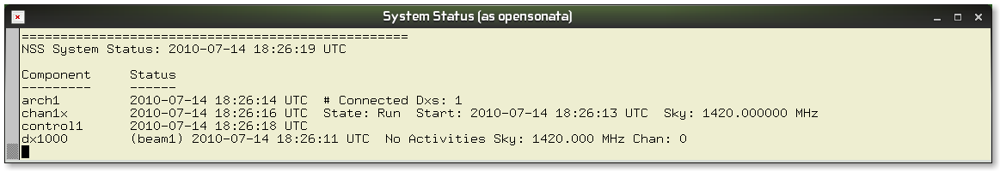
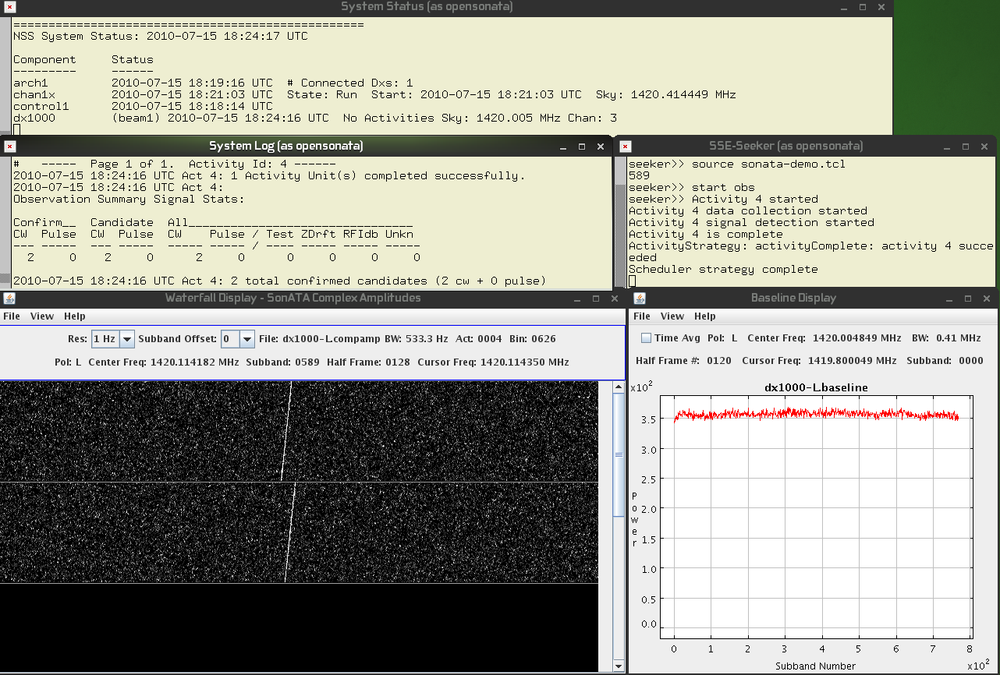
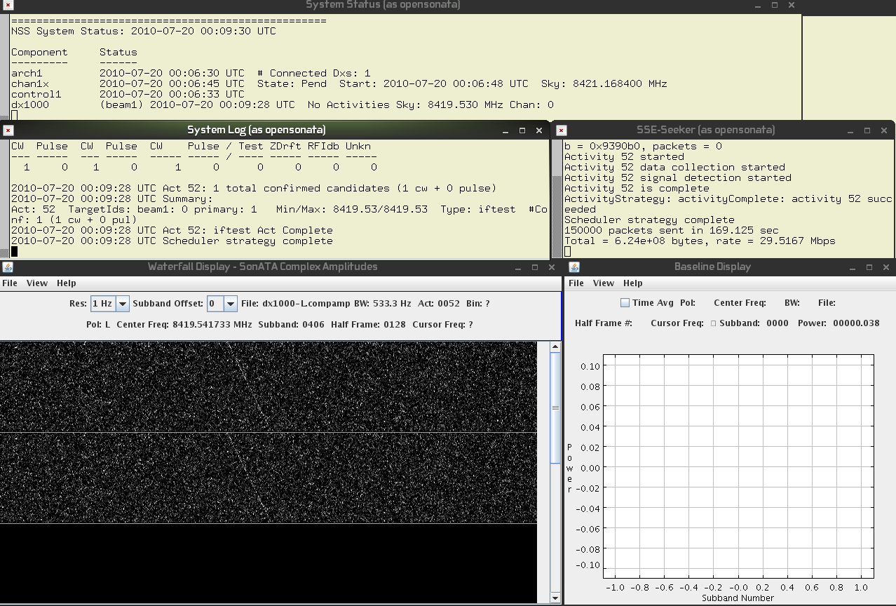

OpenSonATA Release 2.0
Notes
This is rease 2.0 SonATA executables and the start of source code releasing. Please see the release roadmap for more details.
This release contains the binary versions of the OpenSonATA software as well as the source code for The Waterfall Display, the Baseline Display and the curses based status display (called sonataInfoDisplay). Click Here for more details on the source code.
For more information please visit setiQuest.org
Requirements
- A Computer with at least two 64 bit SSE3 compatible Intel processors. 4GB RAM +
- OpenSUSE 11.2, 64-bit version
- Java JDK 1.5
- gcc 4.3.2 or greater
- doxygen
- the curses library (/usr/lib64/libncurses.so) if you wish to run the sonataInfoDisplay program, and the curses build software if you wish to build the sonataInfoDisplay program.
Works well with Linux installed in a virtual machine (like VMWare)
Note: We tested the install on a "fresh" install of OpenSUSE in VMWare.
When Installed with Gnome as the windowing system no extra system libraries were required.
When installed with KDE as the windowing system the following needed to be installed (we used yast)
Installation
- Become root user. Edit /etc/sudoers. Add the line "opensonata ALL=(ALL) NOPASSWD: ALL", replacing "opensonata" with the user name of the account you will be running OpenSonATA from. Save and exit from root user.
- PUT THE GIT DOWNLOAD INSTRUCTIONS HERE...
- cd ./OpenSonATA_2.0
- If you have downloaded the Release 2.0 source code you may cd into the src directory and do a make. This will build the WaterfallDisplay, BaselineDisplay, and the sonataInfoDisplay programs. Click Here for more details about the source code.
Running
Run SonATA using a signal generator program as the signal source...
- run "sonata-gen" to run sonata with a packet generator supplying the signal.
- Several windows will pop up filling the screen. Wait till the top window labled "System Status" lists these components:
- arch1
- chan1x
- control1
- dx1000

- In the window labeled "SSE-Seeker" enter these 2 commands:
- source sonata-demo.tcl
- start obs
- Wait about 2 minutes. The lower left window should display a waterfall.
NOTE: You my need to File->Open in the Waterfall Display program the very first time. You can do this AFTER the data collection has begun.

- To exit openSonATA, press the enter key in the terminal where you started SonATA. All the programs should quit immediately.
NEXT: Try running a replay of a voyager spacecraft observation.
- Run the "sonata-vger" script.
- Several windows will pop up filling the screen. Wait till the top window labled "System Status" lists these components:
- arch1
- chan1x
- control1
- dx1000
- In the window labeled "SSE-Seeker" enter this command: "source vger-demo.tcl"
- Wait about 2 minutes. The lower left window should display a waterfall.
NOTE: You my need to File->Open in the Waterfall Display program the very first time. You can do this AFTER the data collection has begun.

- To exit openSonATA, press the enter key in the terminal where you started SonATA. All the programs should quit immediately.